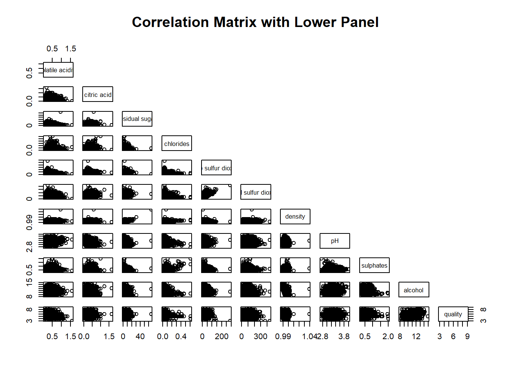
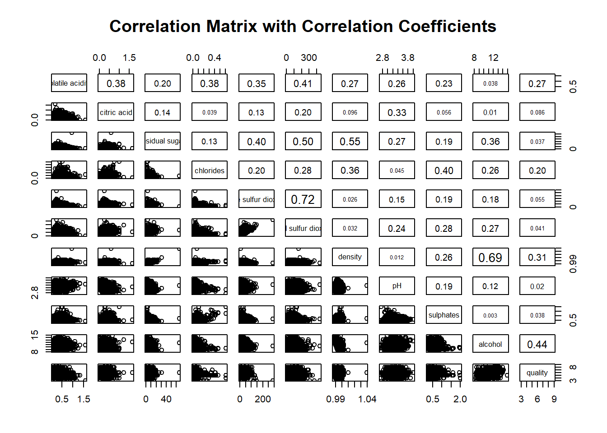
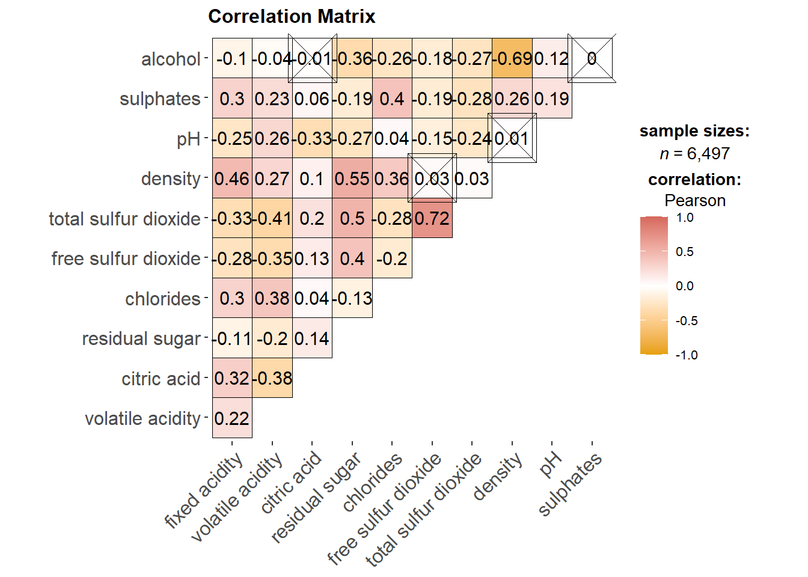
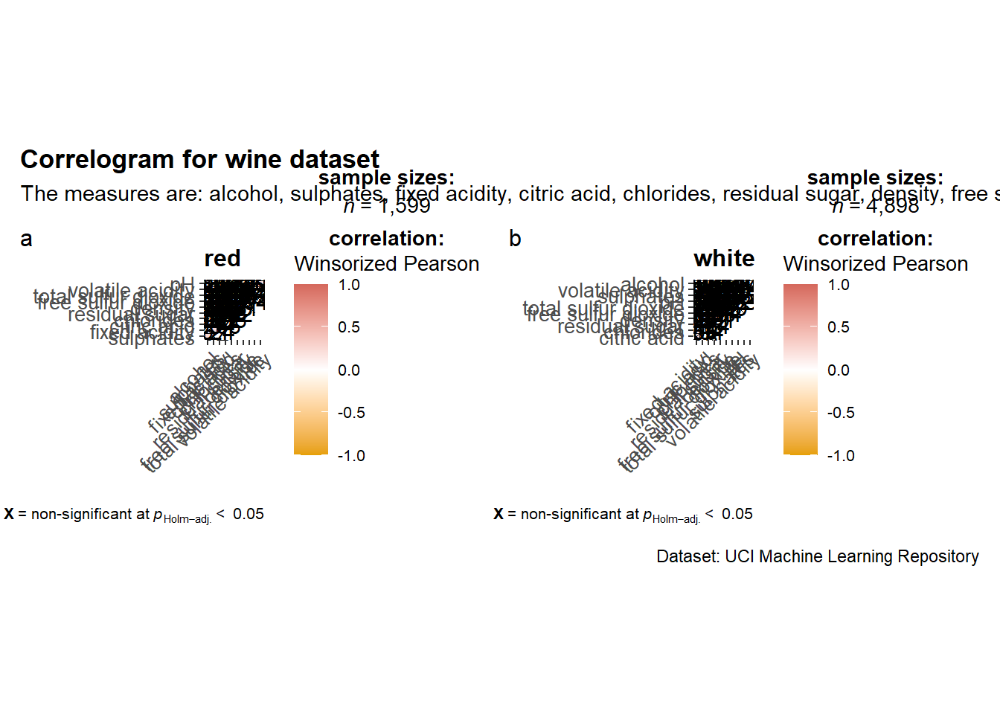
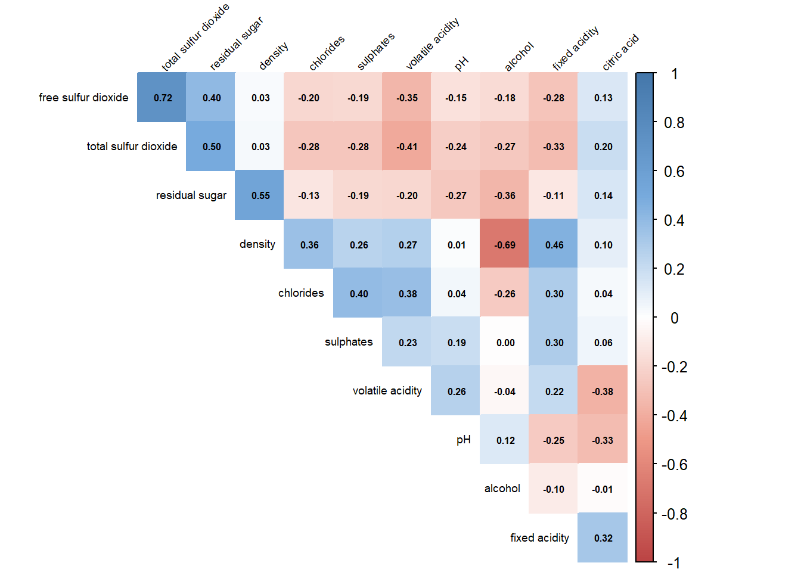
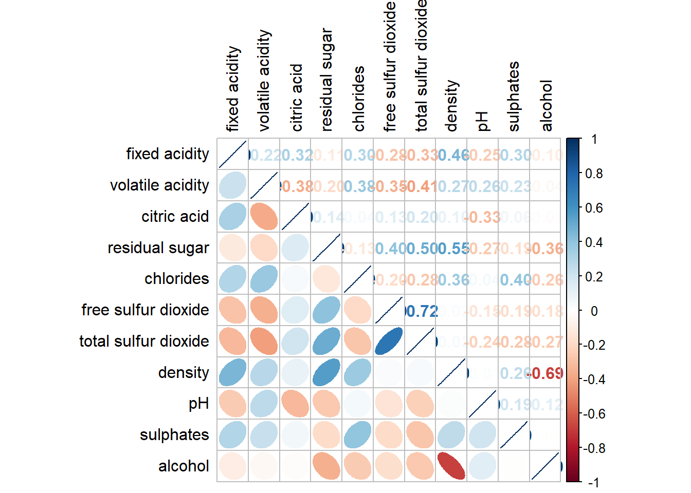
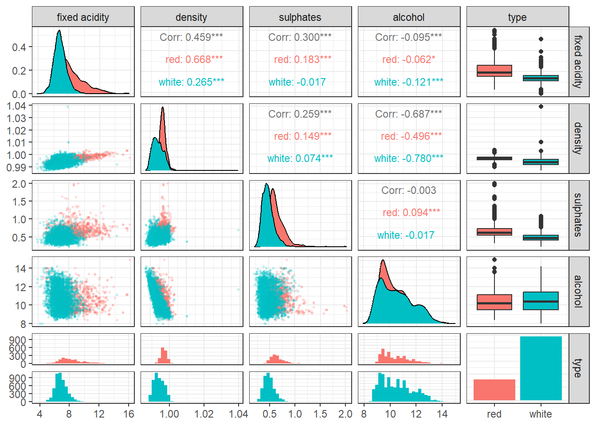

Hands-0n Exercise 5-B:
Visual Correlation Analysis
1 Overview
Correlation coefficient is a popular statistic that use to measure the type and strength of the relationship between two variables. The values of a correlation coefficient ranges between -1.0 and 1.0. A correlation coefficient of 1 shows a perfect linear relationship between the two variables, while a -1.0 shows a perfect inverse relationship between the two variables. A correlation coefficient of 0.0 shows no linear relationship between the two variables.
When multivariate data are used, the correlation coefficeints of the pair comparisons are displayed in a table form known as correlation matrix or scatterplot matrix.
- First, we will learn how to create correlation matrix using pairs() of R Graphics.
- Next, you will learn how to plot corrgram using corrplot package of R.
- Lastly, you will learn how to create an interactive correlation matrix using plotly R.
2 Getting Started
Expanded Toolset: I have added PerformanceAnalytics, corrr, and heatmaply to the package load list. These modern packages provide superior alternatives to base R plotting functions and will fulfill the interactive requirements of this exercise.
In this hands-on exercise, the Wine Quality Data Set of UCI Machine Learning Repository will be used. The data set consists of 13 variables and 6497 observations. For the purpose of this exercise, we will combine the red wine and white wine data into one data file.
Rows: 6,497
Columns: 13
$ `fixed acidity` <dbl> 7.4, 7.8, 7.8, 11.2, 7.4, 7.4, 7.9, 7.3, 7.8, 7…
$ `volatile acidity` <dbl> 0.700, 0.880, 0.760, 0.280, 0.700, 0.660, 0.600…
$ `citric acid` <dbl> 0.00, 0.00, 0.04, 0.56, 0.00, 0.00, 0.06, 0.00,…
$ `residual sugar` <dbl> 1.9, 2.6, 2.3, 1.9, 1.9, 1.8, 1.6, 1.2, 2.0, 6.…
$ chlorides <dbl> 0.076, 0.098, 0.092, 0.075, 0.076, 0.075, 0.069…
$ `free sulfur dioxide` <dbl> 11, 25, 15, 17, 11, 13, 15, 15, 9, 17, 15, 17, …
$ `total sulfur dioxide` <dbl> 34, 67, 54, 60, 34, 40, 59, 21, 18, 102, 65, 10…
$ density <dbl> 0.9978, 0.9968, 0.9970, 0.9980, 0.9978, 0.9978,…
$ pH <dbl> 3.51, 3.20, 3.26, 3.16, 3.51, 3.51, 3.30, 3.39,…
$ sulphates <dbl> 0.56, 0.68, 0.65, 0.58, 0.56, 0.56, 0.46, 0.47,…
$ alcohol <dbl> 9.4, 9.8, 9.8, 9.8, 9.4, 9.4, 9.4, 10.0, 9.5, 1…
$ quality <dbl> 5, 5, 5, 6, 5, 5, 5, 7, 7, 5, 5, 5, 5, 5, 5, 5,…
$ type <chr> "red", "red", "red", "red", "red", "red", "red"…3 Building Correlation Matrix: pairs() method
3.1 Basic correlation matrix
Figure below shows the scatter plot matrix of Wine Quality Data. It is a 11x11 matrix.
3.2 Drawing the lower corner

The code chunk below displays the upper half of the correlation matrix.
3.3 Including Correlation Coefficients
To show the correlation coefficient of each pair of variables instead of a scatter plot, panel.cor function will be used. This will also show higher correlations in a larger font.
Show the code
panel.cor <- function(x, y, digits=2, prefix="", cex.cor, ...) {
usr <- par("usr")
on.exit(par(usr))
par(usr = c(0, 1, 0, 1))
r <- abs(cor(x, y, use="complete.obs"))
txt <- format(c(r, 0.123456789), digits=digits)[1]
txt <- paste(prefix, txt, sep="")
if(missing(cex.cor)) cex.cor <- 0.8/strwidth(txt)
text(0.5, 0.5, txt, cex = cex.cor * (1 + r) / 2)
}
pairs(wine[,2:12],
upper.panel = panel.cor,
main = "Correlation Matrix with Correlation Coefficients")
3.4 Alternative: Information-Dense Correlation Plot
PerformanceAnalytics Package
Why this is better: The base R pairs() function requires writing a lot of custom functions (like panel.cor above) to be useful. The chart.Correlation() function from the PerformanceAnalytics package does all of this automatically in a single line of code, displaying scatter plots with loess curves, histograms for distributions, and correlation values with significance stars.
4 Visualising Correlation Matrix: ggcorrmat() of ggstatplot
In this section, we learn how to visualising correlation matrix by using ggcorrmat() of ggstatsplot package.
4.1 Basic plot
ggcorrmat() uses the following default arguments:
matrix.type= “upper”sig.level= 0.05conf.level= 0.95
Show the code

5 Building Multiple Plots
ggstatsplot provides a special helper function for grouped analysis: grouped_ggcorrmat(). It applies ggcorrmat() across all levels of a specified grouping variable and then combines list of individual plots into a single plot.
Show the code
grouped_ggcorrmat(
data = wine,
cor.vars = 1:11,
grouping.var = type,
colors = c("#E69F00", "white","#d5695d"),
type = "robust",
p.adjust.method = "holm",
plotgrid.args = list(ncol = 2),
ggcorrplot.args = list(outline.color = "black",
hc.order = TRUE,
tl.cex = 10),
annotation.args = list(
tag_levels = "a",
title = "Correlogram for wine dataset",
subtitle = "The measures are: alcohol, sulphates, fixed acidity, citric acid, chlorides, residual sugar, density, free sulfur dioxide and volatile acidity",
caption = "Dataset: UCI Machine Learning Repository"
)
)
6 Visualising Correlation Matrix using corrplot package
6.1 Getting started with corrplot
Before we can plot a corrgram using corrplot(), we need to compute the correlation matrix of wine data frame.
6.2 Customizing Aesthetics & Layout
Custom Diverging Palettes with RColorBrewer
Why this is better: The default red/blue color scheme can be harsh. Using custom color palettes makes the visualization softer on the eyes and better aligned with modern dashboard design principles. Here, we define a custom color ramp.
Show the code
col_custom <- colorRampPalette(c("#BB4444", "#EE9988", "#FFFFFF", "#77AADD", "#4477AA"))
corrplot(wine.cor,
method = "color", col = col_custom(200),
type = "upper", order = "hclust",
addCoef.col = "black", # Add coefficient of correlation
tl.col = "black", tl.srt = 45, # Text label color and rotation
diag = FALSE,
tl.cex = 0.6, number.cex = 0.5)
6.3 Working with visual geometrics
In corrplot package, there are seven visual geometrics (parameter method) can be used to encode the attribute values. They are: circle, square, ellipse, number, shade, color and pie. The default is circle. As shown in the previous section, the default visual geometric of corrplot matrix is circle. However, this default setting can be changed by using the method argument as shown in the code chunk below.

6.4 Working with layout
corrplor() supports three layout types, namely: “full”, “upper” or “lower”. The default is “full” which display full matrix. The default setting can be changed by using the type argument of corrplot().

The default layout of the corrgram can be further customised. For example, arguments diag and tl.col are used to turn off the diagonal cells and to change the axis text label colour to black colour respectively as shown in the code chunk and figure below.

6.5 Working with mixed layout
With corrplot package, it is possible to design corrgram with mixed visual matrix of one half and numerical matrix on the other half. In order to create a coorgram with mixed layout, the corrplot.mixed(), a wrapped function for mixed visualisation style will be used.
Figure below shows a mixed layout corrgram plotted using wine quality data.

The code chunk used to plot the corrgram are shown below.

Notice that argument lower and upper are used to define the visualisation method used. In this case ellipse is used to map the lower half of the corrgram and numerical matrix (i.e. number) is used to map the upper half of the corrgram. The argument tl.pos, on the other, is used to specify the placement of the axis label. Lastly, the diag argument is used to specify the glyph on the principal diagonal of the corrgram.
6.6 Combining corrgram with the significant test
In statistical analysis, we are also interested to know which pair of variables their correlation coefficients are statistically significant.
Figure below shows a corrgram combined with the significant test. The corrgram reveals that not all correlation pairs are statistically significant. For example the correlation between total sulfur dioxide and free surfur dioxide is statistically significant at significant level of 0.1 but not the pair between total sulfur dioxide and citric acid.
With corrplot package, we can use the cor.mtest() to compute the p-values and confidence interval for each pair of variables.
We can then use the p.mat argument of corrplot function as shown in the code chunk below.

6.7 Reorder a corrgram
Matrix reorder is very important for mining the hiden structure and pattern in a corrgram. By default, the order of attributes of a corrgram is sorted according to the correlation matrix (i.e. “original”). The default setting can be over-write by using the order argument of corrplot(). Currently, corrplot package support four sorting methods, they are:
“AOE” is for the angular order of the eigenvectors. See Michael Friendly (2002) for details.
“FPC” for the first principal component order.
“hclust” for hierarchical clustering order, and “hclust.method” for the agglomeration method to be used.
- “hclust.method” should be one of “ward”, “single”, “complete”, “average”, “mcquitty”, “median” or “centroid”.
“alphabet” for alphabetical order.
“AOE”, “FPC”, “hclust”, “alphabet”. More algorithms can be found in seriation package.
6.8 Reordering a correlation matrix using hclust
If using hclust, corrplot() can draw rectangles around the corrgram based on the results of hierarchical clustering. addrect= specifies number of clusters.
7 Network Visualisation of Correlations (corrr Package)
Correlation Networks
Why this is better: When dealing with many variables, matrices become difficult to read. The corrr package, paired with ggraph, allows us to visualize correlations as a network map. Nodes closer together are more highly correlated, and edge thickness/color indicates the strength of the relationship. This is highly intuitive for finding “clusters” of related variables.
8 Enhancing Pair Plots with GGally
While the base R pairs() function is straightforward, it lacks the flexibility and aesthetic appeal of the ggplot2 package. GGally is an extension of ggplot2 that includes the ggpairs() function for creating enhanced pairs plots.
Alpha Blending for Large Datasets
Why this is better: The wine dataset has nearly 6,500 observations. When you plot this many points natively, they overlap and form giant blobs of color (overplotting), hiding the true density. By injecting alpha = 0.2 and reducing the point size, we can actually see where the densest clusters of wines are.
Show the code
ggpairs(wine[, c(1, 8, 10, 11, 13)], # Using a subset for faster rendering
mapping = aes(color = type),
# Applying alpha blending to fix overplotting
lower = list(continuous = wrap("points", alpha = 0.2, size = 0.5)),
upper = list(continuous = wrap("cor", size = 3))
) +
theme_bw() +
theme(plot.title = element_text(hjust=0.5, face="bold"))
9 Interactive Correlation Matrix (heatmaply)
The heatmaply package translates static correlation matrices into interactive D3.js web graphics. This allows users to hover over individual cells to see exact correlation values, zoom into specific clusters, and highlight variable paths dynamically.
7 Reference
Michael Friendly (2002). “Corrgrams: Exploratory displays for correlation matrices”. The American Statistician, 56, 316–324.
D.J. Murdoch, E.D. Chow (1996). “A graphical display of large correlation matrices”. The American Statistician, 50, 178–180.
7.1 R packages
ggcormat()of ggstatsplot packagecorrplot. A graphical display of a correlation matrix or general matrix. It also contains some algorithms to do matrix reordering. In addition, corrplot is good at details, including choosing color, text labels, color labels, layout, etc.
corrgram calculates correlation of variables and displays the results graphically. Included panel functions can display points, shading, ellipses, and correlation values with confidence intervals.